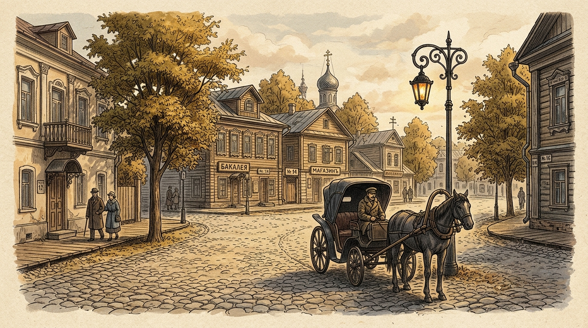

Великий комбинатор
Появление Остапа Бендера в Старгороде и договор концессии

В половине двенадцатого с северо-запада, со стороны деревни Чмаровки, в Старгород вошел молодой человек лет двадцати восьми. За ним бежал беспризорный. «Дядя! — весело кричал мальчик. — Дай десять копеек!» Молодой человек вынул из кармана наливное яблоко и подал его беспризорному, но тот не отставал. Тогда пешеход остановился, иронически посмотрел на мальчика и тихо сказал: «Может быть, тебе дать еще ключ от квартиры, где деньги лежат?»
Одет новый гость был смело: в зеленый в талию костюм, без сорочки — на шее повязан старый шерстяной шарф, а в руке — астролябия, купленная за три рубля на барахолке. Звали его Остап Ибрагимович Бендер, и вся его бурная жизнь состояла из четырехсот сравнительно честных способов отъема денег у граждан.
В тот же вечер в дворницкой бывшего воробьяниновского особняка, где теперь помещался 2-й дом Старсобеса, судьба свела Остапа с растерянным Ипполитом Матвеевичем. Узнав про гамбсовский гарнитур, Бендер мгновенно оценил масштаб предприятия, взял руководство в свои руки, выговорил себе сорок процентов с найденных сокровищ и провозгласил: «Лед тронулся, господа присяжные заседатели! Командовать парадом буду я!»